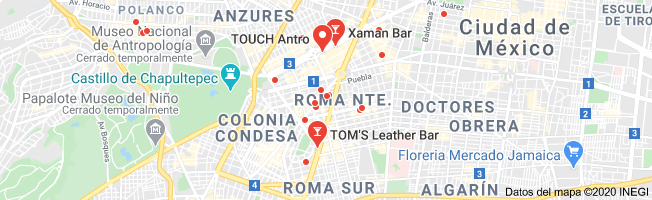

Tenemos 2 sucursales en la CDMX
¿Qué es? Uno de los lugares imprescindibles de la Juárez con elementos
que hacen referencia al desierto y a la mística de los
chamanes. Este sitio se separa de los demás speakeasy de la capital
gracias a su barra y a su peculiar tranquilidad: música lounge de
fondo e iluminación tenue, símil de cualquier cueva espiritista.
¿Por qué ir? Atrás de la barra siempre encontrarás alquimistas-
bartenders internacionales que son verdaderos chamanes de la
coctelería, pues sus shakers, cual vasijas mágicas, emanan
preparaciones fragantes, de retrogusto largo y emborrachamiento intenso.
¿Qué probar? Entre la nueva temporada de Xaman que alude a la
época prehispánica, encuentras tragos como el pacha: ron bacardi,
bitters de chocolate, azúcar de plátano, chips de plátano y perlas de
oro comestibles; también está el huautli, con ron, brandy
infusionado con limón amarillo y agua de cacao con amaranto.
¿Qué es? Este bar deja atrás cualquier mito sobre la absenta,
bebida célebre en la escena intelectual parisina de inicios del siglo XX.
Artemisia llega dedicado al licor de ajenjo, hinojo
y anís en un espacio afrancesado con luz tenue y música en vivo.
¿Por qué ir? El absinthe maison artemisia es fabricado especialmente
en Francia y se acompaña de creaciones botánicas y con destilados mexicanos.
El menú cambia prácticamente cada semana y más de 500 artistas
se han presentado en el encantadoramente ajustado lugar.
¿Cuándo ir? Altamente recomendado para citas, es un espacio romántico
y de tamaño pequeño que se siente íntimo y, a pesar del barullo,
te permite entonar en una plática a gusto. Además la música
llega en estilos variados, como jazz, blues o soul.